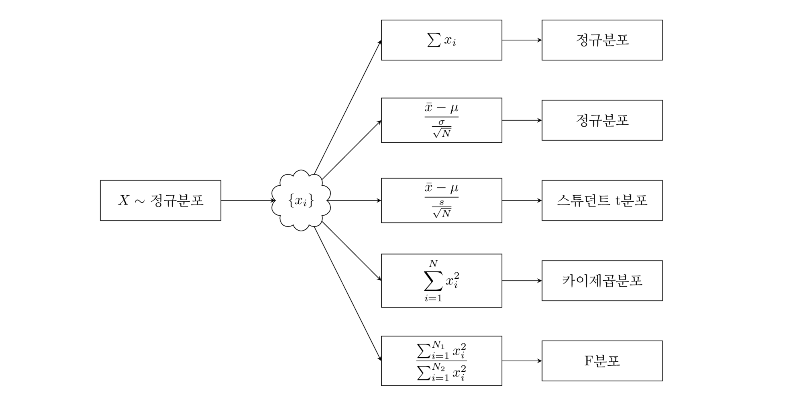

%load_ext tikzmagic
---------------------------------------------------------------------------
ModuleNotFoundError Traceback (most recent call last)
<ipython-input-1-997c417649e4> in <module>
----> 1 get_ipython().run_line_magic('load_ext', 'tikzmagic')
~/anaconda3/lib/python3.8/site-packages/IPython/core/interactiveshell.py in run_line_magic(self, magic_name, line, _stack_depth)
2324 kwargs['local_ns'] = sys._getframe(stack_depth).f_locals
2325 with self.builtin_trap:
-> 2326 result = fn(*args, **kwargs)
2327 return result
2328
<decorator-gen-64> in load_ext(self, module_str)
~/anaconda3/lib/python3.8/site-packages/IPython/core/magic.py in <lambda>(f, *a, **k)
185 # but it's overkill for just that one bit of state.
186 def magic_deco(arg):
--> 187 call = lambda f, *a, **k: f(*a, **k)
188
189 if callable(arg):
~/anaconda3/lib/python3.8/site-packages/IPython/core/magics/extension.py in load_ext(self, module_str)
31 if not module_str:
32 raise UsageError('Missing module name.')
---> 33 res = self.shell.extension_manager.load_extension(module_str)
34
35 if res == 'already loaded':
~/anaconda3/lib/python3.8/site-packages/IPython/core/extensions.py in load_extension(self, module_str)
78 if module_str not in sys.modules:
79 with prepended_to_syspath(self.ipython_extension_dir):
---> 80 mod = import_module(module_str)
81 if mod.__file__.startswith(self.ipython_extension_dir):
82 print(("Loading extensions from {dir} is deprecated. "
~/anaconda3/lib/python3.8/importlib/__init__.py in import_module(name, package)
125 break
126 level += 1
--> 127 return _bootstrap._gcd_import(name[level:], package, level)
128
129
~/anaconda3/lib/python3.8/importlib/_bootstrap.py in _gcd_import(name, package, level)
~/anaconda3/lib/python3.8/importlib/_bootstrap.py in _find_and_load(name, import_)
~/anaconda3/lib/python3.8/importlib/_bootstrap.py in _find_and_load_unlocked(name, import_)
ModuleNotFoundError: No module named 'tikzmagic'
%%tikz -p kotex,pgfplots -l arrows.meta,calc,positioning,shapes -s 2000,1200 -f png
\coordinate (leftbottom) at (0,0);
\coordinate (righttop) at (20,10);
\fill[white,use as bounding box] (leftbottom) rectangle (righttop);
\draw[help lines,white] (leftbottom) grid (righttop);
\tikzset{
>=stealth,font={\normalsize},
rv/.style={draw, minimum width=3cm, minimum height=1cm}
}
\begin{scope}[shift={(2,0)}]
\node[rv] (X) at (2, 5) {$X \sim$ 정규분포};
\node[draw, cloud] (x) at (5.5,5) {$\{x_i\}$};
\node[rv] (x1) at (9, 9) {$\sum x_i$};
\node[rv] (x2) at (9, 7) {$\displaystyle \frac{\bar{x}-\mu}{\frac{\sigma}{\sqrt{N}}}$};
\node[rv] (x3) at (9, 5) {$\displaystyle \frac{\bar{x}-\mu}{\frac{s}{\sqrt{N}}}$};
\node[rv] (x4) at (9, 3) {$\displaystyle \sum_{i=1}^{N} x_i^2$};
\node[rv] (x5) at (9, 1) {$\displaystyle \frac{\sum_{i=1}^{N_1} x_i^2}{\sum_{i=1}^{N_2} x_i^2}$};
\node[rv] (X1) at (13, 9) {정규분포};
\node[rv] (X2) at (13, 7) {정규분포};
\node[rv] (X3) at (13, 5) {스튜던트 t분포};
\node[rv] (X4) at (13, 3) {카이제곱분포};
\node[rv] (X5) at (13, 1) {F분포};
\draw[->] (X) -- (x)
edge (x1.west)
edge (x2.west)
edge (x3.west)
edge (x4.west)
edge (x5.west)
;
\foreach \i in {1,...,5} \draw[->] (x\i) -- (X\i);
\end{scope}
